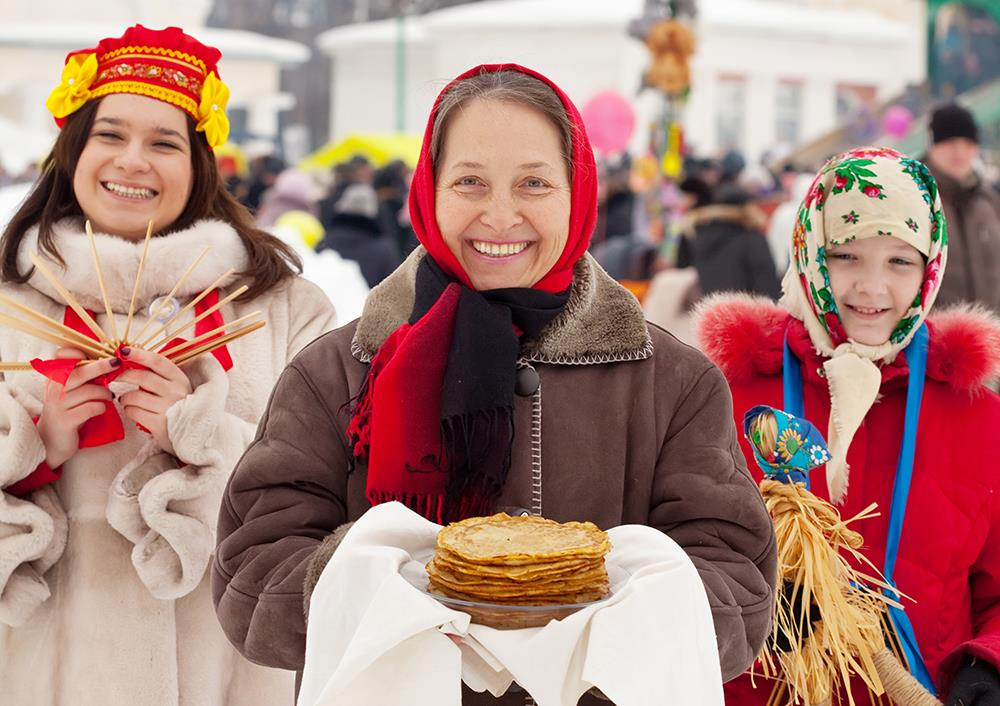

Russias Language And People
-
Return To Motherland
-
Next Fact
-

-
Russia is one of many slavic countries. The Russian language uses the crylic alphabet. The Russian people are very charming and kind contrary to common belief in America.
Traditional Russian food recipes are based on the use of cereals, berries, vegetables, flour and fish. Products that were present in abundance in the lives of ordinary people. Meat dishes were often prepared for the holidays,